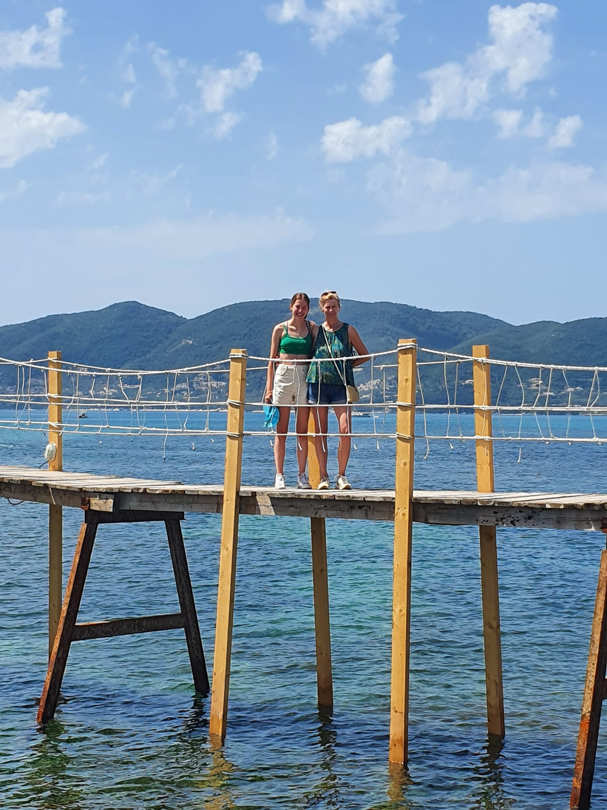
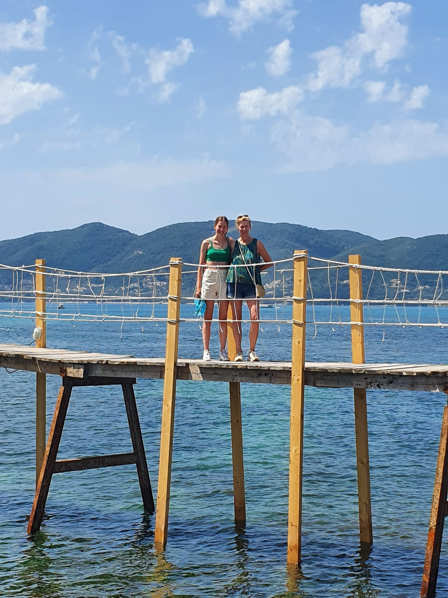

Cameo Island
Cameo Island is een heel klein eilandje voor de kust van Agios Sostis. Het eilandje is bereikbaar via een houten loopbrug over het water. Het water hier is ook heel helder. Zelf zijn wij niet op het eiland geweest, maar vanaf de brug zag het er al leuk uit.
Zelf zijn wij er met de auto heen gereden, door de populaire plaats Laganas. Het was er dan ook heel druk, vooral met auto's en tour bussen. Het stond helemaal vol op de (gratis) parkeerplaats. Het beste tijdstip om naar het eiland te gaan is dan ook wel vroeg in de ochtend, omdat het een populairen plek is en dus snel druk wordt.
Je moet dus entree betalen om het eiland te bezoeken, wij hebben dat zelf dit keer niet gedaan. Mijn moeder was er namelijk al een keer met haar vriendinnen geweest en hoefde het niet nog een keer te zien. Van mijn moeder heb ik wel gehoord dat het wel de moeite waard is om het eiland zelf te bezoeken. Je kan er zwemmen, snorkelen en zonnen. Aan de andere kant van het eiland is namelijk een soort strandje met een steiger, waar er witte doeken boven het eiland wapperen. Er was op het eiland toen zelfs een bar en een Dj, maar geen idee of dat nu nog steeds zo is.
Ik vond het zelf al leuk genoeg om het eilandje van ver af te zien en om op de houten loopbrug te staan. We hebben leuke foto's als resultaat.


 
